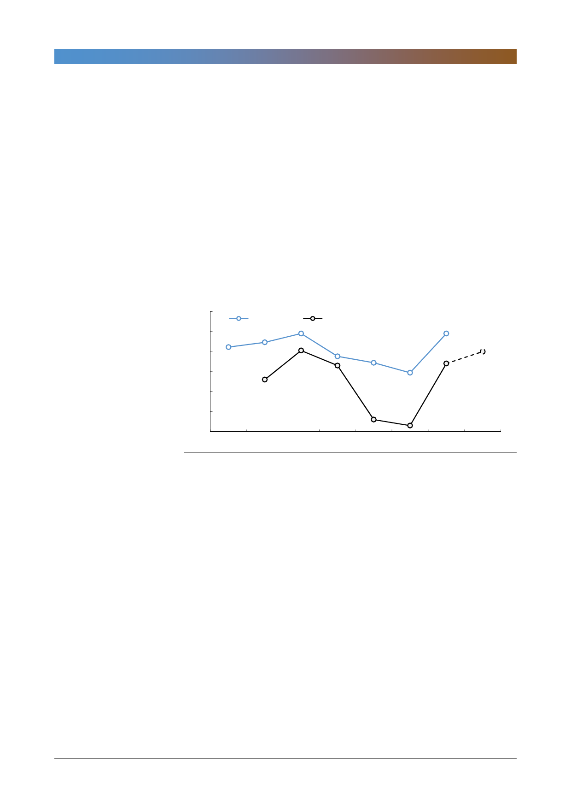

고려아연(010130)
2020년 benchmark TC를 지금 시점에서 예단하기는 어렵다. 그러나 과거 중국
spot TC와의 상관관계를 살펴보면 spot TC의 움직임을 통해 예상할 수 있다. 사
실상 전년도의 연말 spot TC에 따라 연간 benchmark TC의 방향성이 결정되기
때문이다. 결국 우리는 연말 spot TC 전망을 통해 내년을 예상하는 것이다.
지난 5주간의 spot TC의 속도를 감안해 추정한 올해 연말 spot TC는 톤당 200
달러로 작년 연말의 170달러를 소폭 상승하는 수준으로 예상된다. 결국 2020년
benchmark TC는 소폭 상승 혹은 보합세를 유지할 것으로 전망된다. 이에 따라
우리는 글로벌 아연 정광 공급 확대에 따른 눈높이를 다소 현실적으로 조정해야
한다고 판단한다. 과도한 기대는 실망감으로 이어질 수밖에 없기 때문이다.
[그림 10] 중국 spot TC 하락은 2020년 benchmark TC에도 영향
(달러/톤)
300
250
Benchmark TC
200
150
中 spot TC(Y+1)
지난 5주간의
中 spot T/C 하락 속도를 감안해
연말 spot T/C를 추정
200
170
100
50
0
2013
2014
2015
2016
2017
2018
2019 2020F
자료: WIND, 한국투자증권
7